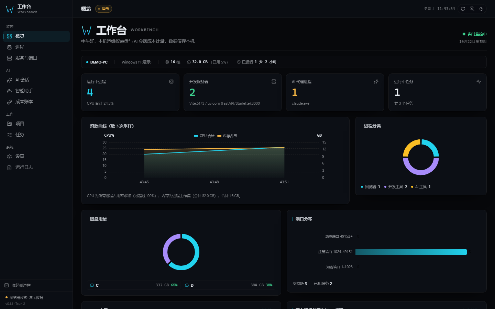
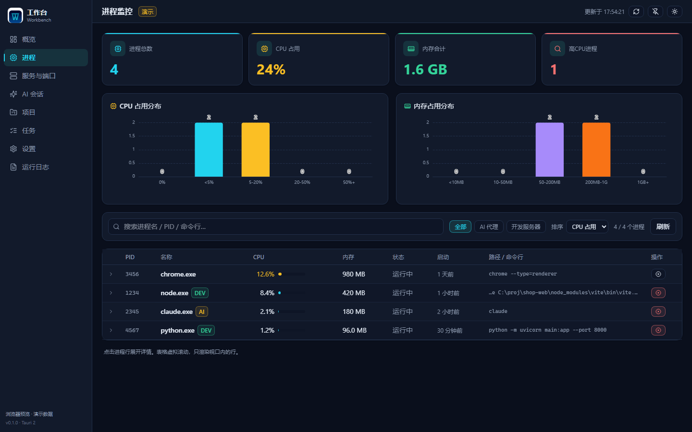
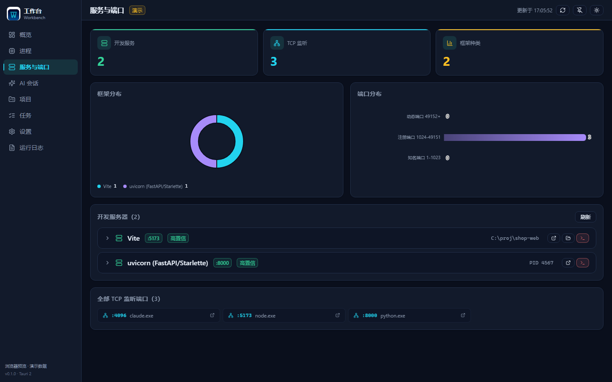
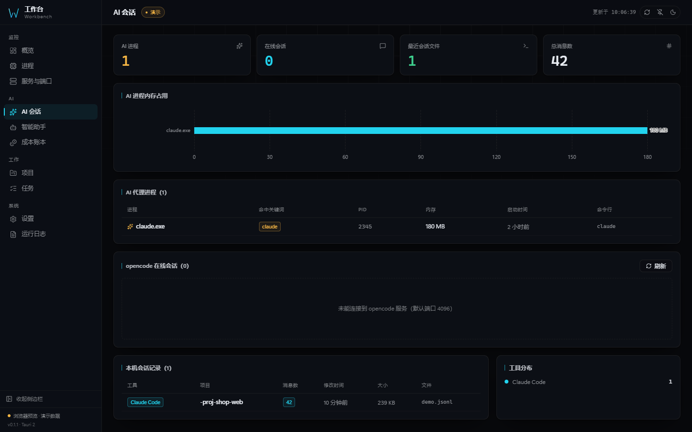
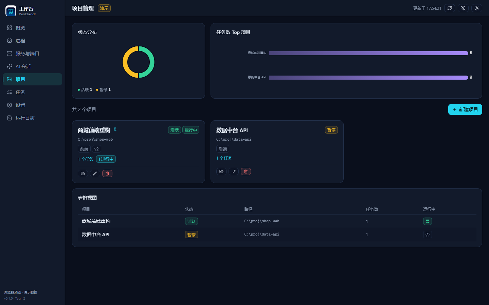
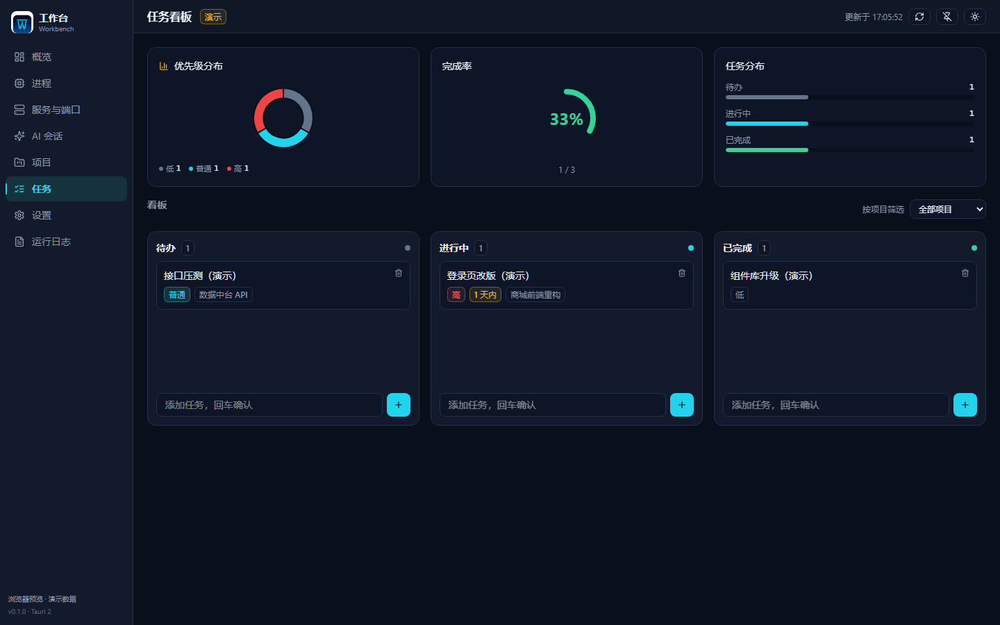
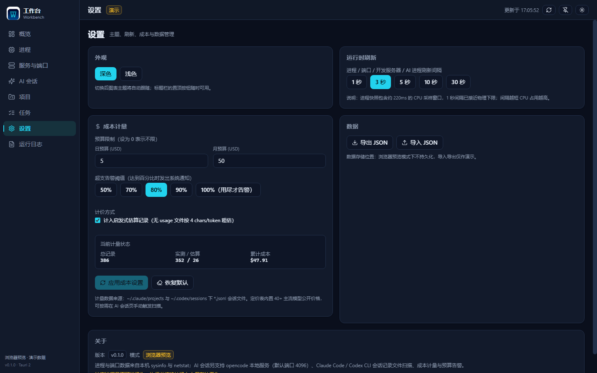
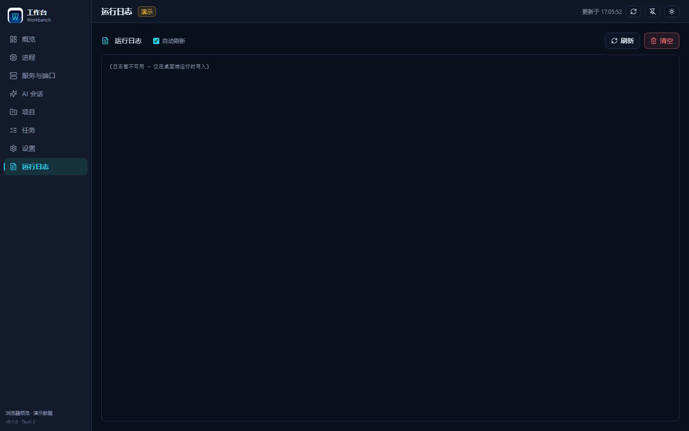

Your machine, at a glance
with AI session cost metering
Live view of processes, ports and dev servers; token usage and spend for Claude Code / Codex / opencode. All data stays on your device — nothing is uploaded.
Features
Nine modules covering the "see it" and "count it" of your daily dev environment.
Overview
Live CPU / memory trends, disk usage donut, process group stats and system info in one screen.
Processes
Full process snapshot, CPU / memory sorting and filtering, virtual scrolling for thousands of rows, kill confirmation.
Servers & ports
Parses netstat for listening ports and auto-tags 30+ dev frameworks such as Vite / Next / uvicorn.
AI sessions
opencode online sessions with details; local Claude Code / Codex session file preview and message stats.
Cost metering
Tokens and spend by day / by model, 40+ built-in model prices, Anthropic cache semantics and budget alerts.
Projects & tasks
Local project registry with automatic Git branch detection; kanban task board, drag to change status.
Logs
Built-in log viewer with per-launch rotation, tail reading and auto refresh.
Settings
Dark / light themes, refresh interval, budget and alert thresholds, JSON import & export.
Privacy first
Everything lands in the local app data directory; CSP locked to self; opened paths go through a backend whitelist.
Screenshots
Captured in browser demo mode (npm run preview) — paths and host names are placeholders.








Download
Windows x64. The installer is not code-signed; Windows may warn "Unknown publisher" on first run.
NSIS installer
Double-click to install, with Start-menu entry and uninstaller. ~3 MB.
Download installerStandalone exe
Single file, runs as-is, no installation — fits on a USB stick.
Download exeBuild from source
| Requirements | Node.js ≥ 20, Rust ≥ 1.77, WebView2 (preinstalled on Windows 11) |
| Install dependencies | npm install |
| Dev mode | npm run tauri dev |
| Build installer | npm run tauri build → src-tauri/target/release/bundle/nsis/ |
| UI only | npm run dev (browser demo mode, no Rust needed) |
Fresh install
-
Download the installer
Click "Download installer" above to get
Workbench_0.1.1_x64-setup.exe. - Allow the Windows prompt The installer is unsigned, so SmartScreen may step in: choose "More info" → "Run anyway".
- Install and launch Once installed, launch Workbench from the Start menu.
- First-run tips Set the refresh interval and budget in "Settings"; on "AI sessions" click "Scan cost" to aggregate historical usage.
FAQ
The questions that come up most around install and daily use.
Windows says "Protected your PC" or "Unknown publisher" — what now?
The installer is not code-signed (signing certificates cost money), so Windows SmartScreen steps in. Choose "More info" → "Run anyway". You can also build from source, or grab the portable exe instead. Verify integrity with the SHA-256 published on the Release page.
Will my data be uploaded to the cloud?
No. Everything (projects, tasks, the cost ledger, logs) is written to the local app
data directory. The app only does two local things: read netstat for
ports and read local session files for costs. The only optional network call is
probing the local opencode service (default port 4096); on failure it just shows
"not detected" and nothing else is affected.
How is the cost metering computed? Is it accurate?
It parses the usage fields in local Claude Code / Codex session JSONL files and prices them against 40+ built-in model prices, in three confidence levels: measured (real usage reported in the file), estimated (no usage — heuristic by character count, can be disabled in Settings), zero_pricing (model unrecognized — recorded as free rather than priced with an invented unit). Anthropic cache tokens follow the official semantics (read 0.1×, write 1.25×).
Can killing a process break my system?
No. PID 0/4 and critical system processes (csrss, lsass, services…) are rejected by the backend, and the frontend asks for confirmation. The target identity is also re-verified after refresh, so PID reuse cannot cause a mistaken kill.
Where did the window go after closing? How do I really quit?
Closing hides to the system tray (intentional — the app keeps monitoring). To truly
exit, right-click the tray icon and choose "Quit". The hotkey
Ctrl+Shift+W shows / hides the window anytime.
Is macOS / Linux supported?
Not verified yet. Development, testing and packaging are Windows-only today: port
collection shells out to netstat -ano and only the NSIS installer is
produced. The code contains a POSIX branch, but it has never been exercised — so the
README does not claim support.
Source code
The same code is mirrored across five platforms — pick whichever you like.